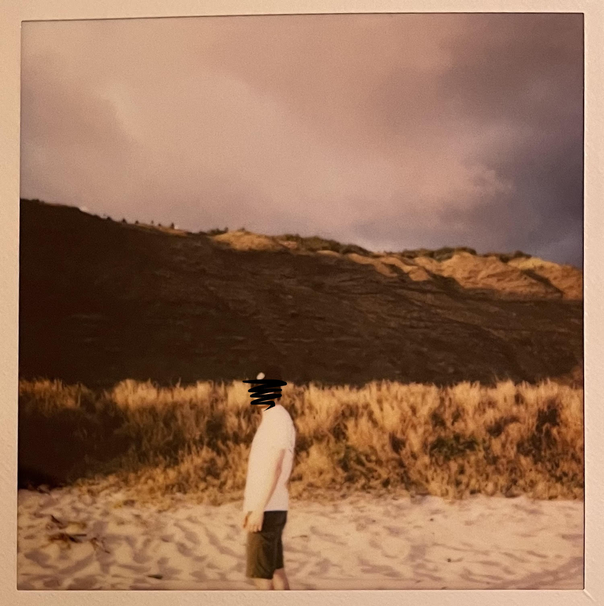

Greetings! I'm Ryan McMurtry
I am a web developer currently living in Orange, California.
As a newcomer in the coding community, my interests are:
- Fluid and aesthetically pleasing web design.
- Creative and comprehensive code.
- A strong sense of community amongst my peers
About Ryan
Prior to joining Thinkful, I was studying to be an audio engineer in the Mele program at Honolulu Community College in Hawaii. After taking a break from college during COVID, I had a newfound interest in the inner workings of websites and how to build and style them to my own liking. I would browse e-commerce websites for hours, fascinated by the layout styles and functionality of each website, which made me want to build a website of my own.
Outside of coding, I have a deep love and appreciation for music. I've been a musician since I was a child, playing various instruments such as the guitar, sax, and piano. I also produce my own music through Ableton (a popular production software) and DJ as a hobby.
Contact Ryan
Please feel free to contact or follow me:
